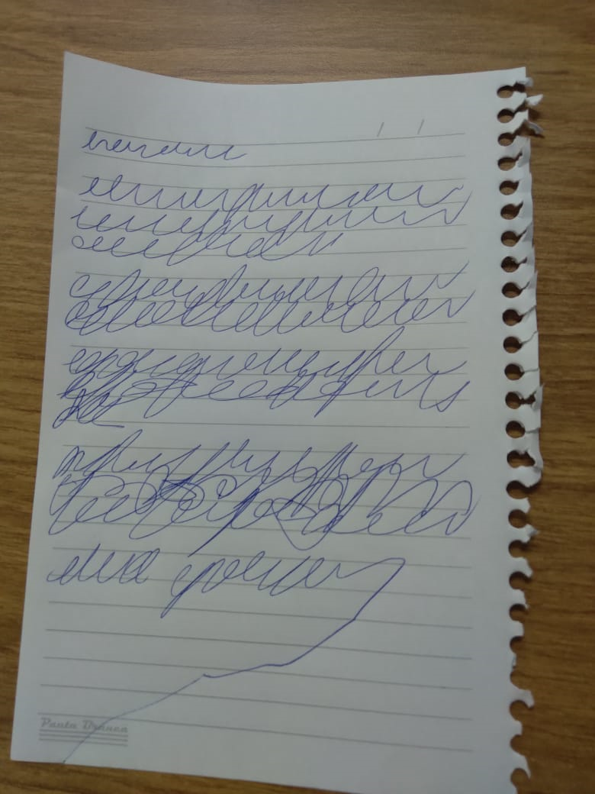

Informações Iniciais
Autor: Jeffrey (sem sobrenome) - Morto;
Data do documento: -;
Tipo de documento: Folha de caderno rasgada;
Local de descoberta: Nos corredores da base alfa da M.E.G., anteriormente,
provavelmente em Th3 Sh4dy Gr3y (mais em Observações)
Data da descoberta: 15/01/2023
Situação do documento: Completamente escaneado e arquivado nos registros.

Foto da página de caderno com o relato.
A quem achar isso.
Meu nome é Jeffrey, e provavelmente estou morto. Acho que caí num nível não descoberto ainda, ou sei lá... Não consigo saber em que nível exatamente estou, aqui não tem sinal de Wi-Fi.
Estava explorando alguns arranha-céus do nível 11 e ia vindo tudo bem,
Só que algo aconteceu do nada. Não sei dizer se noclipei sem intenção ou se tinha algum buraco ou coisa do tipo que eu não vi...
Só sei que acabei caindo nesse outro nível, dentro de uma cabana podre e abandonada. Quando saí, ví uma placa escrita "0zero"... Não tenho ideia do que seja. Ah, e tudo aqui é preto, branco e cinza (que beleza hein).
Apesar da desagradável sensação de estar em perigo iminente (que, sinceramente, eu tenho em todos os outros níveis), esse aqui não me ofereceu nenhum risco até agora, na verdade parece até bem calmo e silencioso...
Vou dar uma explorada nos arredores, apesar do medo de dar de cara com uma entidade... Mas se eu quero sair daqui, não tem outra maneira.
Olhei tudo ao redor e a única coisa que existe é um emaranhado de árvores que parece terem sido feitas por um programador de games iniciante... Uma passa por dentro da outra e, sei lá... Tudo aqui é estranho.
Pelo menos estou de volta na cabana, e percebi uma coisa, tem um relógio aqui. acabou de chegar no 2... será que são duas da tarde então? Em relação ao nível ou às frontrooms? Acho que isso eu nunca saberei.
Passou-se mais de uma hora, na verdade o ponteiro tá quase no 0. Isso que eu percebi de estranho... Que tipo de relógio tem um 0? Será que é um cronômetro então? Ou algo assim? E o que acontece quando chega no 0?
Acho que boa coisa não deve ser, seguindo o histórico dessa merda de Backrooms... O curioso é que eu não sei até agora como que me enfiei nessa... Já tô aqui a quanto tempo? Uns dois meses? E minha família? Amigos?
Cara, não tive um momento de paz desde que entrei naquele carpete molhado e aquelas paredes amarelas... Nem lembro a última vez que eu dormi de verdade, sem medo de ser acordado com minha pele sendo arrancada sem dó.
Sinceramente, eu tô é cansado de tudo isso... Isso é uma espécie de purgatório? Tô pagando pelos pecados que cometi na vida? Estou morto? Quem sabe... Só espero que a mamãe esteja bem...
O ponteiro chegou no zero. Não sei o que aconteceu direito, do nada tudo ficou extremamente escuro, e esse relógio é a única "fonte de luz" (ele só tá brilhando como aquelas estrelinhas que você põe no teto do seu quarto)
desse lugar. Tô tendo uma dificuldade enorme pra escrever, e, além disso, tô meio mal. Tomei um pouco da água de amêndoa que tava jorrando de uma cascata aqui do lado... Mas parece que não tava muito boa não.
Jesus, eu tô ouvindo, posso sentir eles se aproximando... Não sei o que são, mas sei que é o meu fim. A quem achar isso, espero que tenha melhor sorte que eu. Ah, e pelo amor de Deus, evite a qualquer custo tomar a
[Fim do relato, restando apenas um risco da última palavra até fora da folha de caderno.]
Observações
- Esse relato foi achado ao acaso pelo agente S3d3nt4ry, durante patrulha nos corredores do prédio central da base alfa da M.E.G. Ninguém sabe quem o deixou ou como foi parar ali;
- Tentamos recuperar as imagens das câmeras de segurança dos momentos anteriores à descoberta do agente, mas houve algum tipo de interferência anômala e as imagens mostram apenas o ruído característico de uma televisão sem sinal;
- O mau-estar descrito pelo autor do relato provavelmente se deve ao fato de, durante o momento "noturno" de Sh4dy Gr3y, toda e qualquer água de amêndoa obtida no local se transforma em dor líquida.
- Caso sejam fornecidas mais informações. Esta página será atualizada.